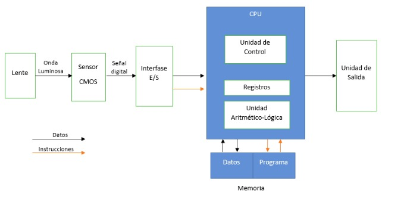

| NOMBRE | DNI | |
|---|---|---|
| Matias Parola | 40101822 | matiasparola100@gmail.com |
| German Dartsch | 33577617 | chocolateconceptual@gmail.com |
| Exequiel Moreno | 34785087 | exequielmoreno.lj@gmail.com |
| Victor Franco | 40101922 | vleofranco@gmail.com |
| Facundo Nimes | 38205188 | facunimes@gmail.com |
| Adrián Salatino | 38205741 | adrian_salatino@hotmail.com |
La webcam, o cámara web, es un periférico de entrada que se usa para capturar imágenes y vídeo. Por su fiabilidad al almacenar tales datos, editarlos o transmitirlos a otro equipo o red, las cámaras web son muy utilizadas en servicios de mensajería instantánea y en videoconferencias.
Esencialmente, una cámara web es una cámara que se encuentra conectada a una computadora, ya sea directamente o de manera inalámbrica, y nos permite captar imágenes que hacen posible la visualización remota.
Las posibilidades que brinda este dispositivo hacen que la tecnología detrás de la webcam sea ampliamente utilizada por todo tipo de usuarios de todo el mundo para diferentes propósitos.
La primera cámara fue puesta en marcha en 1991 por el Departamento de Informática y Ciencias de la Universidad de Cambridge. Desde aquel momento, las webcams se han ido introduciendo en los hogares, las empresas, los edificios públicos, e incluso en las calles de las grandes ciudades del mundo.
En el caso de su utilización hogareña, por lo general la cámara web es usada para establecer comunicaciones entre parientes o amigos que se encuentran distanciados geográficamente mediante el uso de un programa de videollamada. Asimismo, las webcams también están siendo utilizadas para la seguridad, es decir para que los usuarios puedan controlar de forma remota qué es lo que sucede en su casa.
En lo que respecta a las empresas, las webcams suelen utilizarse para llevar a cabo videoconferencias, y así poder realizar reuniones con todos los miembros de la compañía presentes, sin importar el lugar en que ellos se encuentren.
Indice.Un driver o controlador es un software para la computadora cuya función es la de permitir que el Sistema Operativo, ya sea Windows, Linux, Mac OS, o cualquier otro, se comunique con el hardware o aquellos dispositivos que componen la estructura física del computador.
Sin controladores, el hardware que conectamos al equipo; por ejemplo, una tarjeta de vídeo o una cámara web, no funcionará correctamente porque no habría comunicación entre el sistema y el dispositivo.
Por eso, es muy común que cuando un equipo se formatea, es decir, se reinstala el Sistema Operativo desde cero, muchos de sus dispositivos dejen de funcionar. Un ejemplo de esto es cuando el usuario no puede conectarse a Internet, o escuchar ningún sonido de la computadora. Esto es debido a que no se han instalado los drivers correspondientes.
Se debe tener en cuenta que cada driver es exclusivo para su dispositivo, es decir que si se tiene una tarjeta de video marca Nvidia, solo le servirá el driver de su referencia y no se le podrá instalar el driver de una tarjeta de la marca AMD, o, aunque sean de la misma compañía, si tienen diferentes referencias o modelos tampoco serán compatibles los controladores entre ellas.
En el caso de las web cam, la digitalización empieza por cada imagen de manera separada y secuencialmente en base a una ratio de fotogramas por segundo, cuyo estándar va de los 14 a los 60 según la capacidad física del dispositivo. La digitalización de la imagen se basa en una división del espacio a modo de cuadrícula, donde la unidad más pequeña se denomina píxel. Para cada uno de los píxeles que se tienen en una imagen hay que guardar la información referente a la luminancia (brillo o niveles de gris) y, si es en color, también al nivel de cada una de las componentes, V(verde), A(azul) y N(negro). Por tanto se ve que para una imagen se tendrán varias matrices de información. La información de cada píxel es almacenada y transformada en código binario para cada uno de estos datos, así como para su posición relativa en la matriz de la imagen total. Asimismo, se almacenan referencias respecto de la velocidad con la que cada imagen, denominada frame si forma parte de un video, y su posición relativa respecto de las otras imágenes en la secuencia temporal del video. Este es un proceso que se realiza en tiempo real, por lo cual todo se almacena en la memoria ram y se refresca de manera constante.
Indice.Hay varios tipos y modelos de webcam, partiendo de las que son más económicas y más simples, hasta las de gama alta que pueden capturar imágenes y grabar en HD y con muchas más opciones de configuración y características especiales.
Sin embargo, no hay un tipo que sea mejor que otro, todo depende de las necesidades y requerimientos del usuario.
Indice.Las computadoras portátiles generalmente incluyen webcams integradas en la parte superior de la pantalla. Sin embargo, la mayoría de las veces estas no ofrecen una gran calidad de imagen en comparación con webcams más especializadas y de hardware independiente, pero aun así cumplen su cometido de tomar fotografías decentes y permitir las videollamadas.
Ciertos modelos poseen un mecanismo giratorio para dar un mayor grado de personalización al ángulo de la webcam.
Indice.Las webcams externas son las primeras que vieron luz en el mercado y constituyen en sí mismas una impresionante variedad de modelos y marcas. Se componen de un lente y un soporte para situarla en la parte superior del monitor o en otro lugar del escritorio donde esté tu PC. Por lo general deben conectarse al ordenador a través de un cable USB.
La enorme ventaja que tiene la webcam externa en comparación a otros modelos es su versatilidad a la hora de escoger sus especificaciones (por ejemplo, la calidad de imagen), y también que puede ser situada en el ángulo que más convenga al usuario.
Indice.Todas las webcams externas recientes incorporan un micrófono. Esto podría ser beneficioso si se piensa desde el punto de vista económico: no haría falta comprar un micrófono por separado, lo que representa un pequeño ahorro.
Asimismo, este tipo de webcam suele ser más compacto, por lo que no se tiene necesidad de encontrarle mayor espacio.
Indice.Es muy común ver este tipo de webcam en lugares públicos, ya sea en un centro comercial, bancos, calles o avenidas. Las cámaras de red pueden transmitir datos a través de conexiones Ethernet o de forma inalámbrica. Sin embargo, se utilizan mayormente para sistemas de seguridad de circuito cerrado, aunque también pueden ser usadas para videoconferencias importantes donde la webcam común podría mostrar un rendimiento deficiente. Son las webcams más costosas del mercado, y es necesario tener una muy buena conexión a internet para que funcionen correctamente. Visto lo anterior, se entiende que las webcam se hayan convertido en dispositivos imprescindibles para la vida cotidiana. Estamos en la era de las comunicaciones, las videollamadas son una consecuencia natural de la globalización.
Indice.Debido a su capacidad para transmitir video en tiempo real a través de redes de datos (especialmente Internet), proponen un nuevo modelo de relaciones profesionales y sociales.
Las cámaras web más populares hoy día son pequeños dispositivos especializados, que se conectan al computador a través de los puertos serial, paralelo o USB. Sin embargo, también es posible utilizar cámaras de casete tradicionales VHS o Betacam, por ejemplo , que se conectan mediante una tarjeta de captura de video.
Las primeras son ideales para los usuarios tradicionales de salas de conversación en Internet, mientras que las segundas están reservadas para mercados corporativos.
Las cámaras toman las imágenes a razón de varios cuadros (frames) por segundo, pero esta velocidad es inversamente proporcional a su resolución o calidad. Esta depende de la cantidad de puntos (pixels) que la conforman: a mayor cantidad de puntos, mejor se ven las imágenes.
Las imágenes se almacenan generalmente en formatos de compresión de video para el ahorro de espacio en el disco duro. Los formatos más populares en la actualidad son MPEG, Avi y QuickTime (extensiones .mov y .qt)
A pesar que el manejo de fotos e imágenes con webcam es particularmente sencillo incluso pueden enviarse como archivos anexos en correos electrónicos, la videoconferencia presenta algunos inconvenientes ocasionados por el ancho de banda de las redes.
El ancho de banda es la capacidad del canal (las líneas de conexión) para transmitir datos. Las imágenes en movimiento tienen un gran volumen de datos, por lo cual es frecuente que se desplieguen con desfases de tiempo. Estos casos son comunes en las líneas telefónicas convencionales y menos marcados en las conexiones por fibra óptica o líneas telefónicas digitales.
Las cámaras web normalmente están formadas por una lente, un sensor de imagen y la circuitería necesaria para manejarlos.
Existen distintos tipos de lentes, siendo las lentes plásticas las más comunes. Los sensores de imagen pueden ser CCD (charge coupled device) o CMOS (complementary metal oxide semiconductor). Dependiendo de la resolución de las cámaras encontramos los modelos de gama baja, que se sitúan alrededor de 320x240 píxeles. Las cámaras web para usuarios medios suelen ofrecer una resolución VGA (640x480) con una tasa de unos 30 fotogramas por segundo, si bien en la actualidad están ofreciendo resoluciones medias de 1 a 1,3 MP, actualmente las cámaras de gama alta cuentan con 3, 5, 8, 10 y hasta 15 megapíxeles y son de alta definición.
La circuitería electrónica es la encargada de leer la imagen del sensor y transmitirla a la computadora. Algunas cámaras usan un sensor CMOS integrado con la circuitería en un único circuito integrado de silicio para ahorrar espacio y costes. El modo en que funciona el sensor es equivalente al de una cámara digital normal. También pueden captar sonido, con una calidad mucho menor a la normal.
Indice.El Sensor es la parte fundamental de la cámara de fotos, es el elemento que captará la imagen cuya información es completamente analógica y la traducirá a un formato digital que es con el que se trabajará para mejorar la imagen, para imprimirla o para enviarla vía Wifi. Los ordenadores y los equipos digitales utilizan información digital, y la imagen que queremos captar sólo contiene información analógica, pues el sensor es el elemento que realiza la conversión analógico-digital.
Físicamente, un sensor fotográfico está compuesto por un conjunto de receptores que recogerán los valores lumínicos recibidos desde el exterior. Cada fotoreceptor recibirá un nivel de intensidad lumínica y lo almacenará para ser enviado al procesador de la cámara. El nivel de intensidad que cada receptor registra depende de los factores que está presentes en cada fotografía: características de reflexión de luz de toma fotográfica, apertura del diafragma, estructura de los elementos intermedios como los objetivos, con su número y calidad de lentes, etc. Cuando se han recogido todos los datos, serán enviados, ya en formato digital, al procesador a través del circuito electrónico que recorre todo el chip.
El proceso físico de conversión analógico digital es el siguiente:
Cada elemento de la imagen emite una intensidad lumínica analógica determinada.
Cada celda es sensible a la cantidad de fotones recibidos, registrando un valor específico por cada rango de intensidad luminosa recibida
El valor recibido por cada celda del sensor se envía al procesador junto con toda la información de identificación de la propia celda que registra la información luminosa exterior.
El procesador ordena todos los datos recibidos de todas las celdas y configura la imagen digital que acabamos de tomar.
La información de color la añade el procesador, y se obtiene a través de diversos procesos de interpolación.
Uno de los métodos que tradicionalmente han sido utilizados para la obtención de los colores de cada punto de la toma fotográfica es el denominado uso del «Filtro de Bayer». Cada celda fotorreceptora del sensor fotográfico es recubierta de una malla de filtros con los tres colores básicos: Rojo, Verde, Azul. En este caso, la parte de filtro de color verde tiene el doble de superficie que el de los otros dos colores. Hay otros tipos de filtros ideados por las diferentes compañías fotográficas, pero el Filtro de Bayer ha sido tomado siempre como referencia para entender cómo se recoge la información de color de la imagen y cómo ésta queda registrada en las células fotoreceptoras del sensor.
El fotoreceptor recibirá diferentes intensidades de color rojo, azul y verde en función de la onda luminosa que reciba, esta información será enviada al procesador de imagen junto con la propia intensidad luminosa y los datos de la celda y se conformará un pixel con una intensidad luminosa y con un color derivado determinado. Este valor de color e intensidad es el correcto (para eso está el procesador digital de la cámara), y la unión de todos los pixeles junto con su información de intensidad luminosa y de color conforman la imagen correcta que acabamos de fotografiar. Ya tenemos otro factor que determinará que la imagen que queda registrada en la cámara sea lo más parecida a la imagen real que estamos fotografiando. Otros factores son que el propio sensor sea capaz de registrar y traducir de la forma más objetiva la imagen que estamos fotografiando o que el propio objetivo capte realmente la imagen que queremos tomar.
Resumiendo, el sensor CMOS es un componente electrónico compuesto de celdas fotoreceptoras capaces de registrar la intensidad luminosa recibida en el momento de la toma fotográfica. Estará recubierto de un filtro que permitirá conocer el color de cada pixel de la imagen. La información registrada se almacena en formato digital y se envía a través del propio circuito electrónico del sensor y de la propia cámara hasta un procesador de la cámara. Éste organiza la información, la interpreta y crea una imagen que será fiel reflejo de la imagen real que acabamos de fotografiar.
Estos niveles de tensión eléctrica, analógicos, deben convertirse en valores digitales. Un conversor analógico-digital (ADC) convierte el voltaje de salida de cada elemento del CCD en una trama de bits adecuada, que representa la intensidad de la luz reflejada. Una vez convertidos los valores analógicos en digitales, la información resultante puede almacenarse localmente en una RAM para un procesado posterior. Así, una vez recibidos los datos de la imagen digitalizada, el ordenador puede procesar la información.
 Indice.A partir del año 2003, surge una especificación que estandariza y especifica todos los elementos necesarios para transportar flujos de video sobre el protocolo USB. Esta especificación conocida como clase de video para USB (UVC por sus siglas en inglés), agrupa a todos los dispositivos que manejan flujos de video sobre USB en un solo controlador genérico.
La clase de video de USB, UVC, define la funcionalidad de transportar video sobre el estándar USB. Al igual que todos los dispositivos de almacenamiento como memorias USB o discos duros externos pueden ser manejados por un controlador, UVC solo necesita un controlador para manejar todos sus dispositivos. La especificación cubre cámaras web, video cámaras, convertidores de video analógico, sintonizadores de televisión, es decir, dispositivos que manejan flujos de video, tanto en entrada como en salida. Debido a la gran variedad de dispositivos y pocos diseñadores disponibles para desarrollar el controlador, se han enfocado en los dispositivos de entrada y más específicamente, en las cámaras web. Este controlador estandariza la capacidad del protocolo USB de manejar flujos de video y contiene toda la información necesaria para realizar un diseño que incorpore dicha funcionalidad. Define todos los descriptores específicos que deben estar presente en cada función de video sobre USB y cómo debe moverse el video a través del controlador. Permite negociar parámetros esenciales de una señal de video como brillo, resolución de los cuadros, relación de aspecto, cuadros por segundo, ancho de banda; antes de realizar cualquier transferencia o entre transferencias.
La interfaz es mayormente implementada como un conjunto de llamadas a la función IOCTL para un dispositivo específico. Una vez comprendido el mecanismo es posible manejar las cámaras con cierto grado de facilidad y concentrarse en el procesamiento de los cuadros. El algoritmo comienza abriendo el dispositivo, a través de las funciones básicas de entrada y salida del lenguaje C como open("/dev/video0", O_RDWR). Dicho procedimiento resulta sencillo porque ya el módulo UVCVIDEO, perteneciente a UVC, detectó la cámara como un dispositivo perteneciente a UVC, configuró los descriptores necesarios y en la ruta virtual /dev/video0 cargó el dispositivo listo para realizar la adquisición de la señal de video. El siguiente bloque consiste en encuestar y analizar las funcionalidades del dispositivo conectado para posteriormente realizar la configuración. Como se ha mencionado V4L2 soporta una amplia variedad de dispositivos y no todos brindan las mismas capacidades, es por ello que se encuestan las características del dispositivo conectado a través de la función ioctl(fd, VIDIOC_QUERYCAP, &capabilities) y el resultado se almacena en una estructura del tipo v4l2_capability. La configuración del formato de captura es obligatoria. Se debe indicar tamaño de la imagen, formato de color: MPJEG, YUV, RGB, entre otras características. El formato elegido debe ser soportado por el dispositivo conectado y la configuración se realiza a través de la estructura v4l2_format. V4L2 maneja principalmente formatos sin compresión. Los píxeles son transmitidos de izquierda a derecha y de arriba hacia abajo. El primer byte de dato en el buffer es siempre el píxel más a la izquierda y más arriba, y así sucesivamente. Una vez trasmitidos todos los píxeles de una fila pueden o no existir bytes de relleno con el objetivo de lograr alineación. En el sistema diseñado la webcam utilizada tiene soporte para formato YUYV 4:2:0 y formato MJPEG. Se escogió el formato sin compresión YUYV 4:2:0 para adquirir la señal. En este formato 4 bytes representan 2 píxeles, dos muestras de luminancia, una muestra de croma Cr y una muestra de croma Cb. Cada muestra de luminancia pertenece a un píxel mientras que las muestras de croma pertenecen a dos píxeles adyacentes. Este formato en el ambiente de Windows se conoce como YUV2. Se muestra un ejemplo del orden de los píxeles en una imagen de 4x4 píxeles donde cada celda representa un byte de información.
El tercer bloque se encarga de definir la localización de la memoria donde van a estar configurados los buffers para realizar la captura de la señal de video, la cantidad de buffers, dirección de inicio, entre otros parámetros. Esto permite que el sistema almacene correctamente en memoria los cuadros de la señal de video provenientes de la cámara web. Técnicamente este proceso es conocido como queue y una vez llenado con los valores de luminancia y croma, el proceso de habilitar el buffer para que la aplicación lea los datos se le conoce como dequeue. La configuración se realiza a través de la estructura v4l2_requestbuffers. Una vez configurados todos los parámetros se debe realizar el mapeo de los buffers en la memoria del sistema operativo a través de la función ioctl(fd, VIDIOC_QUERYBUF, &bufferinfo) y la estructura v4l2_buffer. Si se cuenta con más de un buffer se debe iterar en un ciclo para realizar el proceso de queue y dequeue secuencialmente en cada buffer. En este punto del algoritmo, se pueden comenzar a capturar los cuadros de video, solo resta activar el flujo de video, poner en cola el buffer donde se requiera almacenar el cuadro actual y una vez llenado el buffer leer los datos para realizar el procesamiento para el cual el sistema fue diseñado.
Indice.La gran diferencia radica en la capacidad, en primera instancia, casi mágica de Linux para hacer funcionar dispositivos sin tener que deliberadamente instalar drivers en la gran mayoría de casos y en caso de instalarse, su sorprendente capacidad para incorporar los mismo instantáneamente sin necesidad de reiniciar el sistema como Microsoft tiene acostumbrado a muchos de sus usuarios en Windows.
Hoy en día al conectar un dispositivo en linux probablemente sea reconocido inmediatamente por el sistema gracias al gran soporte de hardware incluido en el kernel, de no ser así se crea un archivo de dispositivo (que luego es utilizado por el sistema como un objeto tipo dispositivo) en el directorio /dev. Este archivo puede ser empaquetado en algo llamado módulo de kernel que no es más que una estructura de paquete que se nos permite anexarla dinámicamente al kernel a través del programa insmod extendiendo las funcionalidades del kernel mientras éste se encuentra en ejecución. Esto quiere decir, que al instalarse nuevos drivers no es necesario reiniciar para que estos entren en funcionamiento.
En Windows, si bien en sus últimas versiones finalmente utiliza un sistema para incorporar dinámicamente los drivers de dispositivos en su kernel, generalmente es necesario reiniciar porque el sistema no puede garantizar que ningún programa externo esté utilizando el dispositivo. Este problema surge de como Windows trata a los dispositivos en ejecución, como bien mencionamos que en Linux son tratados como archivos, en la plataforma de Microsoft el sistema los interpreta como una red de nodos, lo que dificulta la tarea de reconocer si programas externos están utilizando a los mismos. Por lo tanto, recomienda reiniciar el sistema para cargar correctamente estos nodos en el único momento donde puede garantizar que los dispositivos no están siendo usados, durante el proceso de arranque del S.O.
Indice.En el presente trabajo se exploró el funcionamiento de la webcam con particular énfasis en el funcionamiento de los drivers.
Se pudo observar cómo la webcam es un dispositivo que, primeramente, debe llevar a cabo un proceso analógico de captura de imágenes muy similar al de la cámara de fotos, y en este punto la interfaz de transformación de la señal de imagen recibida no dista mucho del funcionamiento del procesamiento de la imagen fija en lo que respecta a transformación de los datos a código binario.
Donde radica la principal diferencia de este dispositivo con otros dedicados a la digitalización de imágenes es en la secuencialidad con que las imágenes se unen entre sí: cada imagen no es una unidad, sino parte de una composición mayor que es el video, por ende guarda relación temporal y espacial con el resto de las imágenes que componen el video. Esto requiere instrucciones extra que la interfaz debe dar a la máquina y en esto consiste el diferencial de la cámara web.
Cómo funciona (S./F.). ¿Cómo funcionan los drivers? [Sitio web]. Recuperado de https://como-funciona.com/drivers/#como-funcionan-los-drivers.
Delgado León, D. (2017). Diseño de un sistema de adquisición de imágenes basado en cámaras web USB y hardware reconfigurable. En RIELAC, Vol. XXXVIII 2/2017 p. 1-11 Mayo – Agosto ISSN: 1815-5928
Facultad de Ciencias, UASLP. (S./F.). Controladores de dispositivo [En línea]. Recuperado de http://galia.fc.uaslp.mx/~cantocar/ARQUI_COM_II/LIBRO%20IBM-PC/11.html
Hernández, J. (2000). Qué son y cómo funcionan las cámaras web. En El Tiempo [periódico online] Disponible en
Intrigano (2018). Linux Devices and Drivers [Video de Youtube]. Disponible en https://youtu.be/b58CnY7qxpk
LiveOverflow (2019). How Do Linux Kernel Drivers Work? - Learning Resource [Video de Youtube]. Disponible en https://youtu.be/juGNPLdjLH4
Maestro de la Computación (2010). ¿Qué son los drivers y para qué sirven? [Sitio web]. Disponible en https://www.maestrodelacomputacion.net/que-son-los-drivers-y-para-que-sirven/
Microsoft (2017). What is a driver? [Sitio web]. Disponible en https://docs.microsoft.com/en-us/windows-hardware/drivers/gettingstarted/what-is-a-driver-
Miracomosehace.com (2020) [Sitio web]. ¿Qué son, para qué sirven y cómo funcionan los drivers o controladores? Recuperado de https://miracomosehace.com/como-funcionan-drivers-controladores/#:~:text=%C2%BFPara%20qu%C3%A9%20sirven%20los%20drivers,de%20ellos%20de%20manera%20%C3%B3ptima .
Tareadeinformaticacreaciondeunblog (2017). Webcam dispositivo de entrada [Sitio web]. Disponible en http://tareadeinformaticacreaciondeunblog.blogspot.com/2017/03/articulo-2.html#:~:text=Es%20un%20dispositivo%20que%20se,para%20capturar%20im%C3%A1genes%20y%20v%C3%ADdeo .
Top Fotografía (2020). El Sensor CMOS [Sitio web]. Recuperado de http://www.topfotografia.net/Fotografia/teoria-de-la-fotografia/sensor-cmos/sensor-cmos.html
Wikipedia (2019). Digitalización de video [Sitio web]. Disponible en https://es.wikipedia.org/wiki/Digitalizaci%C3%B3n_de_video
Indice.